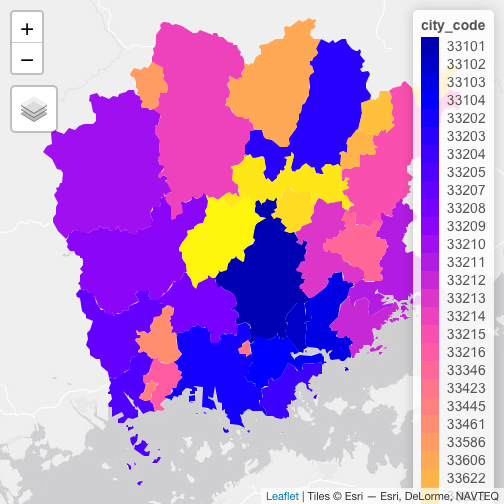
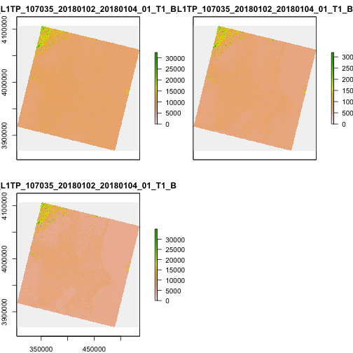
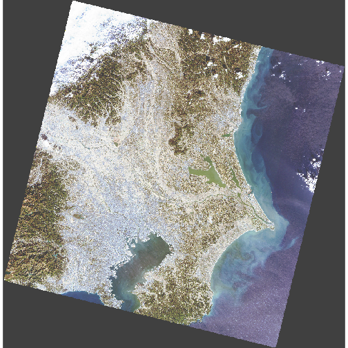

この章で取り扱うデータ
- ALOS全球数値地表モデル by JAXA...
単一バンド - LANDSAT...
マルチカラーバンド
ダウンロードしくてください。
ラスタデータの読み込み
library(raster)
r_dsm <-
raster(here::here("data-raw", "N035E139_AVE_DSM.tif"))
2
ラスタデータには、単一のバンドまたはレイヤーを持つものと複数のバンドを持つものとがあります。複数のバンドからなるラスタデータは特にマルチバンドデータ、マルチスペクトルイメージとも呼ばれます。バンドとは、ラスタを構成するセルの集合を指します。
単一バンドのラスタデータには、標高データのように一つの値を記録するものや、白黒の航空写真のように波長域が一つに限定されるものが含まれます。対して衛星画像のラスタデータはマルチバンドの代表例です。衛星画像の撮影を行うセンサーは、特定の波長域(可視域、紫外線域、赤外線域など)での値を記録しています。
LANDSATの説明... landsat-8
- B2 (解像度 30m)
- B3 (解像度 30m)
- B4 (解像度 30m)
このことはR上でラスタデータを操作する上で大事です。それはラスタのバンド数に応じて、適用する関数に違いがあるためです。
- RasterLayer (
raster()): 単一バンド - RasterBrick (
brick()): マルチバンドラスター向け (単一ファイル) - RasterStack (
stack()): マルチバンドラスター向け (複数ファイル)
tif_files_20180102 <-
list.files(here::here("data-raw"),
pattern = "LC08_L1TP_107035_20180102_20180104_01_.+.TIF",
full.names = TRUE)
tif_files_20180814 <-
list.files(here::here("data-raw"),
pattern = "LC08_L1TP_107035_20180814_20180814_01_.+.TIF",
full.names = TRUE)
2
3
4
5
6
7
8
9
r_landsat_201801 <-
stack(c(tif_files_20180102[1],
tif_files_20180102[2],
tif_files_20180102[3]))
r_landsat_201808 <-
stack(c(tif_files_20180814[1],
tif_files_20180814[2],
tif_files_20180814[3]))
2
3
4
5
6
7
8
9
rasterパッケージのオブジェクトはS4クラスとして扱われます。これはベクトル形式の地理空間データを扱うために広く使われてきたspパッケージと同様の機構となります。S4クラスのオブジェクトの特徴は、属性を参照するためにスロット (@)を利用することです。
スロットにはデータとメタデータが記録されています。slotNames()を使い、読み込んだラスタオブジェクトのスロット名を確認し、スロットの要素を参照してみましょう。
slotNames(r_dsm)
## [1] "file" "data" "legend" "title" "extent" "rotated"
## [7] "rotation" "ncols" "nrows" "crs" "history" "z"
2
rasterパッケージが読み込むラスタデータのオブジェクトは、crsというスロットを持っています。これはデータの座標参照系を示すものです。参照は次のように、オブジェクト名@crsとします。
r_dsm@crs
## CRS arguments:
## +proj=longlat +datum=WGS84 +no_defs +ellps=WGS84 +towgs84=0,0,0
2
要素の参照は関数を使って実行することも可能です。
crs(r_dsm)
## CRS arguments:
## +proj=longlat +datum=WGS84 +no_defs +ellps=WGS84 +towgs84=0,0,0
2
スロットに記録されていない情報は、関数を使って調べられます。例えばncell()はグリッドの数を返却する関数です。(セルの行数と列数はそれぞれnrows、ncolsスロットに記録されています。)
# ラスタデータのグリッド数を調べる
# r_dsm@nrows * r_dsm@ncols
ncell(r_dsm)
2
3
## [1] 12960000
ncell(r_landsat_201801)
## [1] 60929411
res(r_landsat_201801)
## [1] 30 30
r_landsat_201801@layers[[1]]
## class : RasterLayer
## dimensions : 7871, 7741, 60929411 (nrow, ncol, ncell)
## resolution : 30, 30 (x, y)
## extent : 303885, 536115, 3870585, 4106715 (xmin, xmax, ymin, ymax)
## coord. ref. : +proj=utm +zone=54 +datum=WGS84 +units=m +no_defs +ellps=WGS84 +towgs84=0,0,0
## data source : /Users/uri/Documents/tsukubar/r-spatial-guide/data-raw/LC08_L1TP_107035_20180102_20180104_01_T1_B2.TIF
## names : LC08_L1TP_107035_20180102_20180104_01_T1_B2
## values : 0, 65535 (min, max)
2
3
4
5
6
7
8
ラスタデータへの処理
解像度、CRSの変更
crs(r_dsm) # 先に確認しておく (この行は消す)
## CRS arguments:
## +proj=longlat +datum=WGS84 +no_defs +ellps=WGS84 +towgs84=0,0,0
2
crs_utm_z54 <-
crs(r_landsat_201801, asText = TRUE)
r_dsm_utm_z54 <-
projectRaster(r_dsm,
crs = crs_utm_z54,
method = "ngb")
plot(r_dsm_utm_z54) # ちょっと斜めになっているのを確認
2
3
4
5
6
7
8
9

# r_landsat_201801_s <-
# projectRaster(r_landsat_201801,
# crs = crs_utm_z54,
# method = "ngb",
# res = 1)
# res(r_landsat_201801_s)
2
3
4
5
6
切り抜き
library(jpmesh)
r_dsm_crop <-
crop(
r_dsm,
extent(jpmesh::export_mesh(523973) %>%
sf::st_transform(crs = proj4string(r_dsm)) %>%
sf::st_bbox() %>%
as.vector() %>%
.[c(1, 3, 2, 4)] %>%
purrr::set_names(c("xmin", "xmax",
"ymin", "ymax"))),
snap = "in"
)
plot(r_dsm_crop)
2
3
4
5
6
7
8
9
10
11
12
13
14
15
16

library(sf)
library(jpmesh)
r_dsm_crop_sp <-
crop(r_dsm,
as(export_mesh(523973), "Spatial")) %>%
as.data.frame(xy = TRUE) %>%
tibble::as_tibble()
2
3
4
5
6
7
## Error in as.data.frame.default(., xy = TRUE): cannot coerce class 'structure("RasterLayer", package = "raster")' to a data.frame
r_dsm_crop_sp %>%
ggplot(aes(x, y, fill = N035E139_AVE_DSM)) +
geom_raster() +
scale_fill_gradientn(colors = topo.colors(15)) +
coord_sf()
2
3
4
5
## Error in eval(lhs, parent, parent): object 'r_dsm_crop_sp' not found
# 1セルごとの値を取り出す
extract(r_dsm,
as(export_mesh(523973), "Spatial"),
df = TRUE)
2
3
4
## Error in UseMethod("extract_"): no applicable method for 'extract_' applied to an object of class "c('RasterLayer', 'Raster', 'BasicRaster')"
# 集計する
extract(r_dsm,
as(export_mesh(523973), "Spatial"),
fun = mean)
2
3
4
## Error in UseMethod("extract_"): no applicable method for 'extract_' applied to an object of class "c('RasterLayer', 'Raster', 'BasicRaster')"
poi <-
st_point(c(139.479, 35.300)) %>%
st_sfc(crs = 4326)
# csrを修正してから〜
# mapview::mapview(poi)
extract(r_dsm,
as(poi, "Spatial"),
buffer = 300,
fun = mean)
2
3
4
5
6
7
8
9
## Error in UseMethod("extract_"): no applicable method for 'extract_' applied to an object of class "c('RasterLayer', 'Raster', 'BasicRaster')"
poi <-
st_point(c(139.479, 35.300)) %>%
st_sfc(crs = 4326)
2
3
NDVI
(NIR - Red) / (NIR + Red)
tif_files_20180814 <-
list.files(here::here("data-raw"),
pattern = "LC08_L1TP_107035_20180814_20180814_01_RT_.+.TIF",
full.names = TRUE)
r_r201801 <-
raster(tif_files_20180104[3])
2
3
4
5
6
7
## Error in raster(tif_files_20180104[3]): object 'tif_files_20180104' not found
r_nir201801 <-
raster(tif_files_20180104[4])
2
## Error in raster(tif_files_20180104[4]): object 'tif_files_20180104' not found
r_ndvi201801 <-
(r_nir201801 - r_r201801) / (r_nir201801 + r_r201801)
2
## Error in eval(expr, envir, enclos): object 'r_nir201801' not found
r_r201808 <-
raster(tif_files_20180814[3])
r_nir201808 <-
raster(tif_files_20180814[4])
r_ndvi201808 <-
(r_nir201808 - r_r201808) / (r_nir201808 + r_r201808)
par(mfrow = c(1, 2),
mar = c(0.4, 0.65, 0.65, 0.4))
plot(r_ndvi201801, axes = FALSE, box = FALSE)
2
3
4
5
6
7
8
9
10
11
## Error in plot(r_ndvi201801, axes = FALSE, box = FALSE): object 'r_ndvi201801' not found
plot(r_ndvi201808, axes = FALSE, box = FALSE)
dev.off()
2
## RStudioGD
## 2
2
簡単な可視化
マルチバンドのラスタでは、バンドごとに出力されます。
plot(r_dsm)

plot(r_landsat_201801)

plotRGB(r_landsat_201801,
r = 3, g = 2, b = 1,
scale = 65535,
# hist or lin
stretch = "hist")
2
3
4
5

# slideview
starsパッケージ
library(stars)
r_landsat_201801 <-
read_stars(c(tif_files_20180104[5],
tif_files_20180104[4],
tif_files_20180104[3]),
along = "band")
2
3
4
5
## Error in read_stars(c(tif_files_20180104[5], tif_files_20180104[4], tif_files_20180104[3]), : object 'tif_files_20180104' not found
plot(r_landsat_201801)

mapview::slideview(r_r201801, r_nir201808)
## Error in eval(quote(list(...)), env): object 'r_r201801' not found